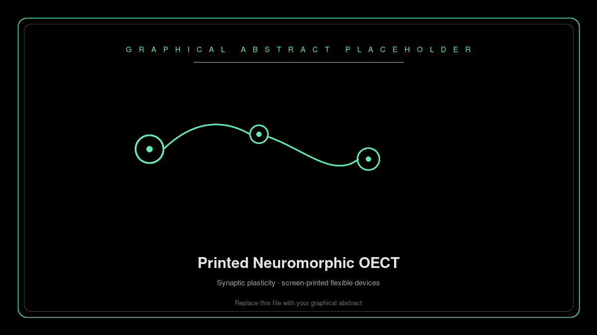
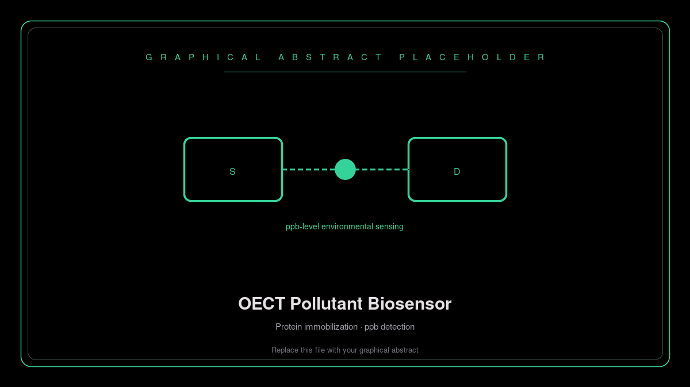
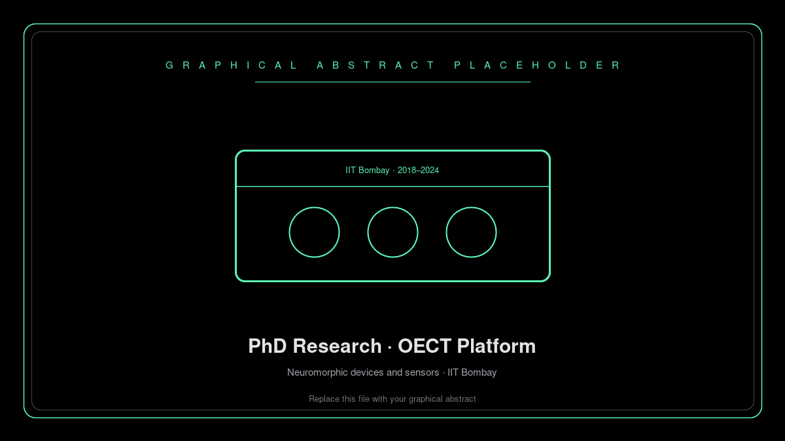

A chronological record of breakthroughs in semiconductor physics, neuromorphic computing, and advanced materials.
Major Milestone
Screen-Printed OECTs for Bio-Realistic Synaptic Plasticity

Replace with graphical abstract · assets/research/ga-01-printed-neuromorphic-oect.png
Demonstrated bio-realistic emulation of complex synaptic plasticity and logic—including the Ebbinghaus forgetting curve, STDP, paired-pulse facilitation, and OR logic—in a low-energy (~24 nJ), fully screen-printed organic electrochemical transistor (OECT).
Replace with graphical abstract · assets/research/ga-02-photothermal-rgo-transistor.png
Fabricated low-voltage photo-thermally reduced graphene oxide (rGO) transistors with an ion-gel dielectric. The photo-thermal route avoids toxic chemical reagents while delivering improved carrier mobility and device stability versus conventional reduction methods.
Protein-Immobilized OECT Biosensors for Aromatic Water Pollutants

Replace with graphical abstract · assets/research/ga-03-oect-water-pollutant-sensor.png
Developed an ultrasensitive OECT biosensor for aromatic water pollutants at parts-per-billion (ppb) levels via controlled protein immobilization—aimed at real-time environmental monitoring.
OECTs for Neuromorphic Devices and Sensors — PhD, IIT Bombay

Replace with graphical abstract · assets/research/ga-04-phd-oect-neuromorphic.png
Doctoral research establishing organic electrochemical transistors as a platform for neuromorphic hardware and bioelectronic sensing, spanning device physics, fabrication, and application-driven architectures.
ThesisDevice PhysicsIIT Bombay
Domain Expertise
memory
Semiconductor Physics
Advanced characterization of carrier mobility and lattice dynamics in wide-bandgap materials.
neurology
Neuromorphic Systems
Developing bio-inspired hardware architectures using memristive devices and thin-film transistors.
biotech
Nanotechnology
Precision synthesis and manipulation of 1D and 2D materials for ultra-sensitive detection devices.